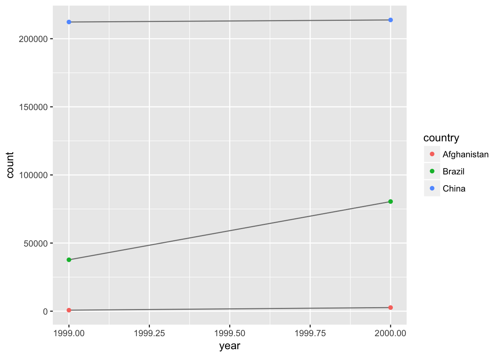

Chapter 12 - Tidy Data
Load the libraries needed for these exercises.
library(tidyverse)12.2 - Tidy Data
Problem 1
Using prose, describe how the variables and observations are organised in each of the sample tables.
table1 is the ‘tidy’ dataset: each variable has its own column, each observation has its own row, and each value has its own cell:
table1## # A tibble: 6 x 4
## country year cases population
## <chr> <int> <int> <int>
## 1 Afghanistan 1999 745 19987071
## 2 Afghanistan 2000 2666 20595360
## 3 Brazil 1999 37737 172006362
## 4 Brazil 2000 80488 174504898
## 5 China 1999 212258 1272915272
## 6 China 2000 213766 1280428583table2 combines cases and population into one column called type, this means that each variable does not have its own column, and that each observation spans multiple rows:
table2## # A tibble: 12 x 4
## country year type count
## <chr> <int> <chr> <int>
## 1 Afghanistan 1999 cases 745
## 2 Afghanistan 1999 population 19987071
## 3 Afghanistan 2000 cases 2666
## 4 Afghanistan 2000 population 20595360
## 5 Brazil 1999 cases 37737
## 6 Brazil 1999 population 172006362
## 7 Brazil 2000 cases 80488
## 8 Brazil 2000 population 174504898
## 9 China 1999 cases 212258
## 10 China 1999 population 1272915272
## 11 China 2000 cases 213766
## 12 China 2000 population 1280428583In table3 the variable rate violates a tidy principle, with multiple values contained in a cell, which also means that each variable does not have its own column:
table3## # A tibble: 6 x 3
## country year rate
## * <chr> <int> <chr>
## 1 Afghanistan 1999 745/19987071
## 2 Afghanistan 2000 2666/20595360
## 3 Brazil 1999 37737/172006362
## 4 Brazil 2000 80488/174504898
## 5 China 1999 212258/1272915272
## 6 China 2000 213766/1280428583table4a and table4b separate cases and population into their own tables across years, with multiple observations in each row:
table4a## # A tibble: 3 x 3
## country `1999` `2000`
## * <chr> <int> <int>
## 1 Afghanistan 745 2666
## 2 Brazil 37737 80488
## 3 China 212258 213766table4b## # A tibble: 3 x 3
## country `1999` `2000`
## * <chr> <int> <int>
## 1 Afghanistan 19987071 20595360
## 2 Brazil 172006362 174504898
## 3 China 1272915272 1280428583Problem 2
Compute the rate for table2, and table4a + table4b. You will need to perform four operations:
- Extract the number of TB cases per country per year.
- Extract the matching population per country per year.
- Divide cases by population, and multiply by 10000.
- Store back in the appropriate place.
Which representation is easiest to work with? Which is hardest? Why?
NOTE these exercises demonstrate the difficulties of working with non-tidy data, the methods to come later in this chapter will greatly simplify the below code.
Create a tidy version of table2 by filtering type into two tables and using the dplyr full_join() function to recreate table1
table2a <- table2 %>%
filter(type == 'cases') %>%
select(country, year, cases = count)
table2b <- table2 %>%
filter(type == 'population') %>%
select(country, year, population = count)
full_join(table2a, table2b) %>%
mutate(rate = cases / population * 10000)## Joining, by = c("country", "year")## # A tibble: 6 x 5
## country year cases population rate
## <chr> <int> <int> <int> <dbl>
## 1 Afghanistan 1999 745 19987071 0.372741
## 2 Afghanistan 2000 2666 20595360 1.294466
## 3 Brazil 1999 37737 172006362 2.193930
## 4 Brazil 2000 80488 174504898 4.612363
## 5 China 1999 212258 1272915272 1.667495
## 6 China 2000 213766 1280428583 1.669488Use similar logic on table4a and table4b - this ends up being a bit more work as the data are already stored across two tables:
table4a_1 <- table4a %>%
mutate(year = 1999) %>%
select(country, year, cases = `1999`)
table4a_2 <- table4a %>%
mutate(year = 2000) %>%
select(country, year, cases = `2000`)
table4b_1 <- table4b %>%
mutate(year = 1999) %>%
select(country, year, population = `1999`)
table4b_2 <- table4b %>%
mutate(year = 2000) %>%
select(country, year, population = `2000`)
bind_rows(table4a_1, table4a_2) %>%
full_join(bind_rows(table4b_1, table4b_2)) %>%
mutate(rate = cases / population * 10000)## Joining, by = c("country", "year")## # A tibble: 6 x 5
## country year cases population rate
## <chr> <dbl> <int> <int> <dbl>
## 1 Afghanistan 1999 745 19987071 0.372741
## 2 Brazil 1999 37737 172006362 2.193930
## 3 China 1999 212258 1272915272 1.667495
## 4 Afghanistan 2000 2666 20595360 1.294466
## 5 Brazil 2000 80488 174504898 4.612363
## 6 China 2000 213766 1280428583 1.669488Problem 3
Recreate the plot showing change in cases over time using table2 instead of table1. What do you need to do first?
Filter type so that only cases is plotted:
table2 %>%
filter(type == 'cases') %>%
ggplot(aes(year, count)) +
geom_line(aes(group = country), colour = "grey50") +
geom_point(aes(colour = country))
12.3 - Spreading and Gathering
Problem 1
Why are gather() and spread() not perfectly symmetrical? Carefully consider the following example:
stocks <- tibble(
year = c(2015, 2015, 2016, 2016),
half = c( 1, 2, 1, 2),
return = c(1.88, 0.59, 0.92, 0.17)
)
stocks## # A tibble: 4 x 3
## year half return
## <dbl> <dbl> <dbl>
## 1 2015 1 1.88
## 2 2015 2 0.59
## 3 2016 1 0.92
## 4 2016 2 0.17stocks %>%
spread(year, return) %>%
gather("year", "return", `2015`:`2016`)## # A tibble: 4 x 3
## half year return
## <dbl> <chr> <dbl>
## 1 1 2015 1.88
## 2 2 2015 0.59
## 3 1 2016 0.92
## 4 2 2016 0.17(Hint: look at the variable types and think about column names.) Both spread() and gather() have a convert argument. What does it do?
In the above example gather() and spread() are not perfectly symmetrical as year is converted from a numeric to a character variable. Use the convert argument to automatically run type.convert() on the key column:
stocks %>%
spread(year, return, convert = TRUE) %>%
gather("year", "return", `2015`:`2016`, convert = TRUE)## # A tibble: 4 x 3
## half year return
## <dbl> <int> <dbl>
## 1 1 2015 1.88
## 2 2 2015 0.59
## 3 1 2016 0.92
## 4 2 2016 0.17Problem 2
Why does this code fail?
table4a %>%
gather(1999, 2000, key = "year", value = "cases")## Error in inds_combine(.vars, ind_list): Position must be between 0 and nBe sure to use backticks to include a nonstandard variable name within a tibble:
table4a %>%
gather(`1999`, `2000`, key = "year", value = "cases")## # A tibble: 6 x 3
## country year cases
## <chr> <chr> <int>
## 1 Afghanistan 1999 745
## 2 Brazil 1999 37737
## 3 China 1999 212258
## 4 Afghanistan 2000 2666
## 5 Brazil 2000 80488
## 6 China 2000 213766Problem 3
Why does spreading this tibble fail? How could you add a new column to fix the problem?
people <- tribble(
~name, ~key, ~value,
#-----------------|--------|------
"Phillip Woods", "age", 45,
"Phillip Woods", "height", 186,
"Phillip Woods", "age", 50,
"Jessica Cordero", "age", 37,
"Jessica Cordero", "height", 156
)Spreading the given tibble will fail because rows 1 and 3 are identical observations. Add a count variable to fix the problem:
people$count <- c(1,1,2,1,1)
people %>%
spread(key, value)## # A tibble: 3 x 4
## name count age height
## * <chr> <dbl> <dbl> <dbl>
## 1 Jessica Cordero 1 37 156
## 2 Phillip Woods 1 45 186
## 3 Phillip Woods 2 50 NAProblem 4
Tidy the simple tibble below. Do you need to spread or gather it? What are the variables?
preg <- tribble(
~pregnant, ~male, ~female,
"yes", NA, 10,
"no", 20, 12
)The given tibble is not tidy as one variable (sex) is spread across multiple columns. Use gather():
preg %>%
gather(male:female, key = sex, value = count)## # A tibble: 4 x 3
## pregnant sex count
## <chr> <chr> <dbl>
## 1 yes male NA
## 2 no male 20
## 3 yes female 10
## 4 no female 1212.4 - Spreading and Uniting
Problem 1
What do the extra and fill arguments do in separate()? Experiment with the various options for the following two toy datasets.
tibble(x = c("a,b,c", "d,e,f,g", "h,i,j")) %>%
separate(x, c("one", "two", "three"))## Warning: Too many values at 1 locations: 2## # A tibble: 3 x 3
## one two three
## * <chr> <chr> <chr>
## 1 a b c
## 2 d e f
## 3 h i jtibble(x = c("a,b,c", "d,e", "f,g,i")) %>%
separate(x, c("one", "two", "three"))## Warning: Too few values at 1 locations: 2## # A tibble: 3 x 3
## one two three
## * <chr> <chr> <chr>
## 1 a b c
## 2 d e <NA>
## 3 f g iextra controls what happens when separate() results in too many pieces. In the first example, the second row appears to have an extra observation, which is dropped by default. Using extra = 'merge' will preserve the value:
tibble(x = c("a,b,c", "d,e,f,g", "h,i,j")) %>%
separate(x, c("one", "two", "three"), extra = 'merge')## # A tibble: 3 x 3
## one two three
## * <chr> <chr> <chr>
## 1 a b c
## 2 d e f,g
## 3 h i jfill controls what happens when separate() results in not enough pieces. In the second example, the second row appears to be missing an observation, which will be filled from the right be default. Using fill = 'left' will fill from left instead.
tibble(x = c("a,b,c", "d,e", "f,g,i")) %>%
separate(x, c("one", "two", "three"), fill = 'left')## # A tibble: 3 x 3
## one two three
## * <chr> <chr> <chr>
## 1 a b c
## 2 <NA> d e
## 3 f g iProblem 2
Both unite() and separate() have a remove argument. What does it do? Why would you set it to FALSE?
remove will drop the original input column from the data frame. Set it to FALSE in order to keep it in the data:
tibble(x = c("a,b,c", "d,e,f", "g,h,i")) %>%
separate(x, c("one", "two", "three"), remove = FALSE)## # A tibble: 3 x 4
## x one two three
## * <chr> <chr> <chr> <chr>
## 1 a,b,c a b c
## 2 d,e,f d e f
## 3 g,h,i g h iProblem 3
Compare and contrast separate() and extract(). Why are there three variations of separation (by position, by separator, and with groups), but only one unite?
separate() will create columns using either a position or a separator, while extract() will create columns using a regular expression groups. Consider the differences in the following:
df <- data.frame(x = c(NA, "a-b", "a-d", "b-c", "d-e"))
df %>% separate(x, c("A", "B"))## A B
## 1 <NA> <NA>
## 2 a b
## 3 a d
## 4 b c
## 5 d edf %>% extract(x, c("A", "B"), "([a-d]+)-([a-d]+)")## A B
## 1 <NA> <NA>
## 2 a b
## 3 a d
## 4 b c
## 5 <NA> <NA>There is only one variation of unite() since it is a many to one mapping. The arguments passed to unite() will always be concatenated to single result.